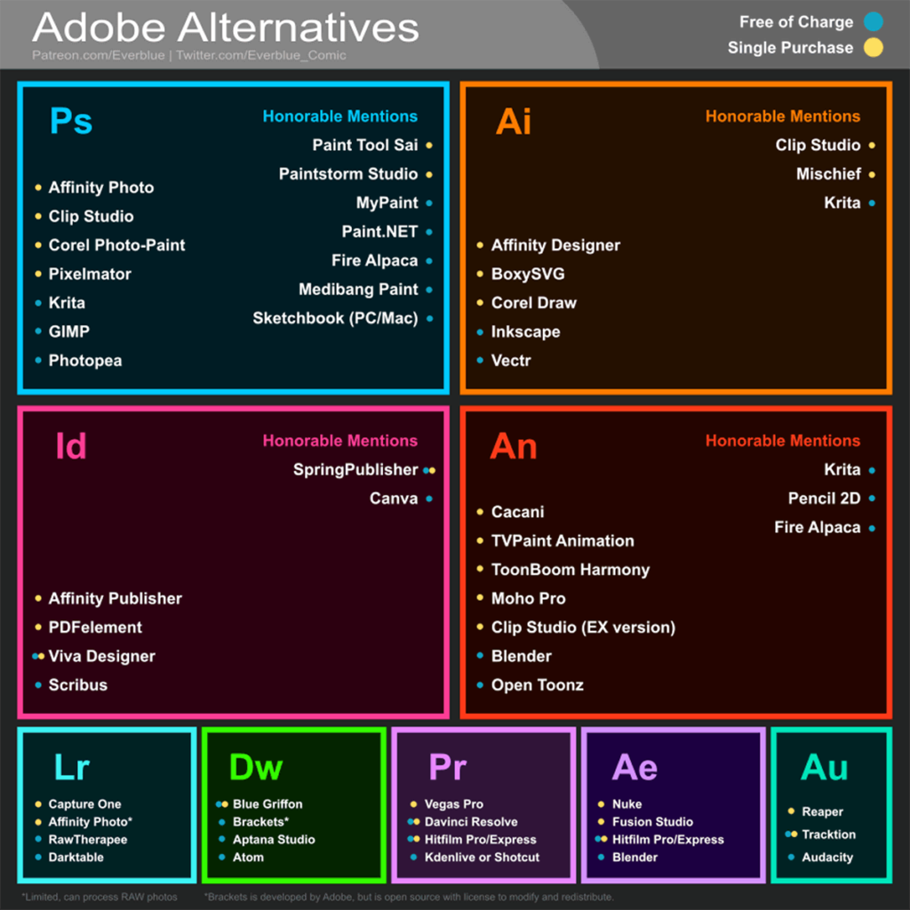

Em 1983, um jovem programador hippie chamado Richard Stallman deu os primeiros passos para garantir que os usuários dos computadores tivessem a liberdade para escolherem e controlarem os programas que eles utilizam.
A liberdade referida por Stallman, permite que os usuários “controlam o programa e o que ele faz por eles”. Na prática, a filosofia do software livre fornece uma maneira de contrabalancear o monopólio que empresas de tecnologia (principalmente as produtoras de softwares) exercem sobre o mercado.
Hoje, a ideia de software livre se expandiu e inclui os mais diversos produtos digitais: desde músicas, imagens, vídeos e softwares, até os circuitos digitais usados por diversos dispositivos IoT.
Resumindo: o software livre e seus diversos filhos são maneiras de permitir que usuários desenvolvam, executem, copiem, distribuam, estudem, modifiquem, editem e compartilhem seus trabalhos com o mundo, de forma gratuita e colaborativa.
Abaixo estão alguns projetos e softwares livres sobre os mais diversos assuntos.
Imagens Gratuitas
Pexels
Pixabay
Unsplash
Wikimedia Commons
Ícones e Vetores Gratuitos
The Noun Project
Flaticon
Freepik
Fontes Gratuitas
Google Fonts
Open Foundry
Font Library
Use & Modify
The League of Movable Type
Cores e Paletas
My Color Space
Palleton
Palx
Open Color Tools
Tint & Shade Generator
Programas

Imagem produzida por Michael Sexton, 2019. Todos os direitos reservados.